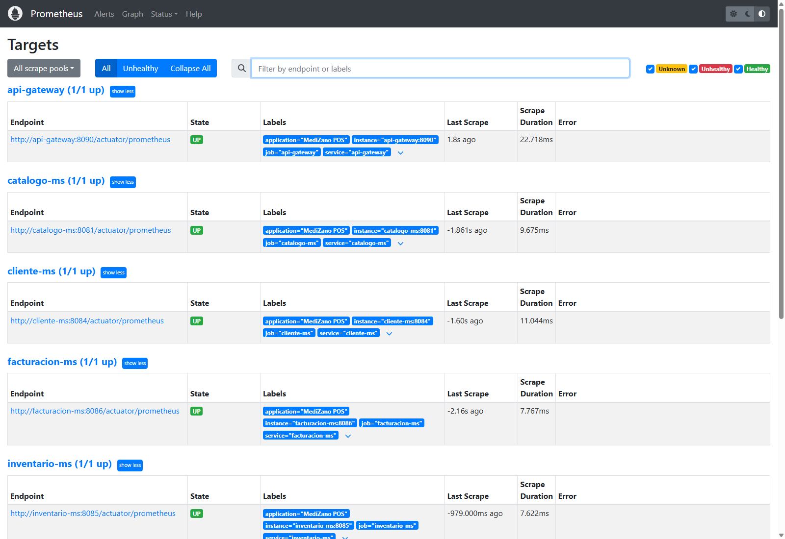
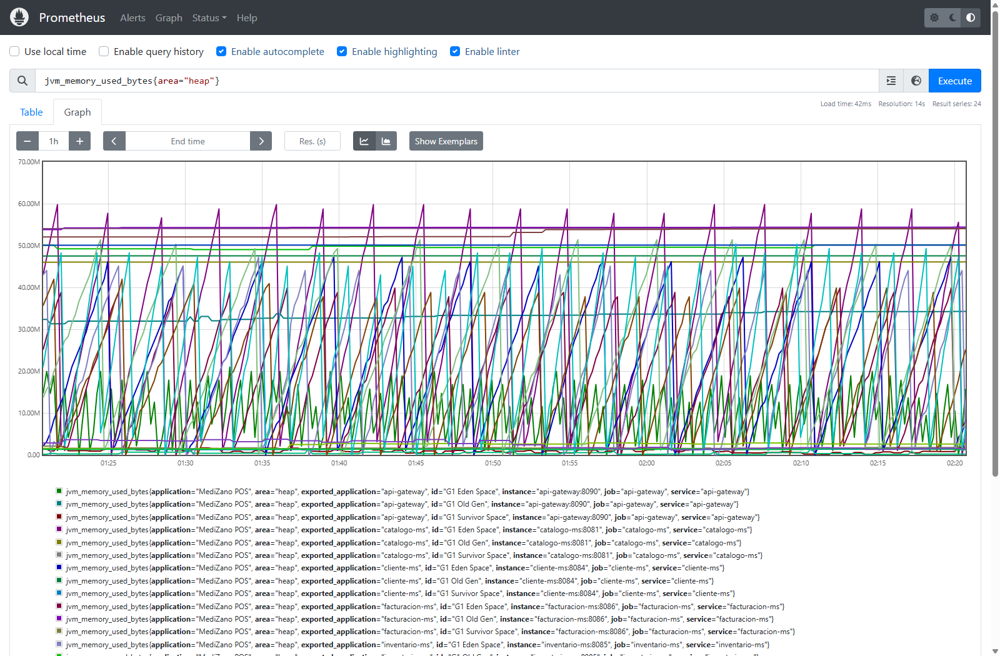
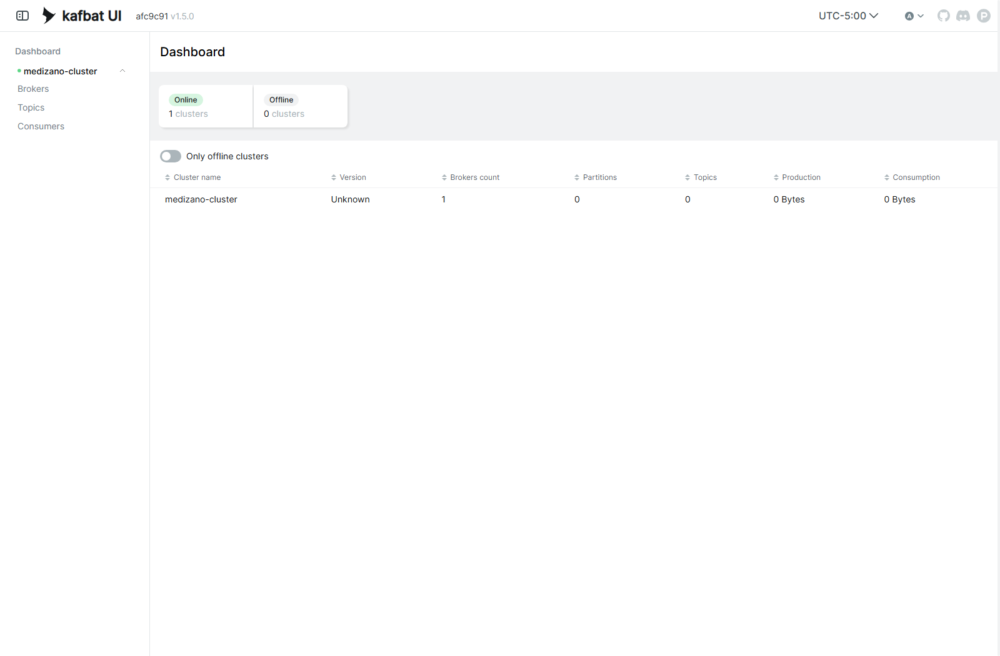

S10 - Observabilidad Centralizada y Diagnóstico Distribuido (Prometheus, Loki, Grafana)¶
Sesión S10 · Desarrollo de Aplicaciones Distribuidas (UPeU)
Herramientas de Observabilidad: Prometheus (:9090), Grafana (:3000), Grafana Loki (:3100), Grafana Alloy, Kafka UI (:18085)
Métricas Recolectadas: Spring Boot Actuator, Micrometer JVM, Latencia HTTP P95
1. Los Tres Pilares de la Observabilidad en MediZano¶
En una arquitectura de 8 microservicios con múltiples contenedores Docker en ejecución, conectarse a cada máquina por SSH para revisar archivos de texto plano .log es inviable e ineficiente.
MediZano implementa la Tríada de Observabilidad Cloud-Native:
flowchart TD
subgraph Microservicios Spring Boot
MS1[api-gateway :8090]
MS2[catalogo-ms :8081]
MS3[orden-ms :8082]
MS4[inventario-ms :8085]
MS5[facturacion-ms :8086]
end
subgraph Recolección de Métricas
MS1 & MS2 & MS3 & MS4 & MS5 -->|HTTP GET /actuator/prometheus cada 5s| PROM[Prometheus Server :9090]
end
subgraph Recolección de Logs
MS1 & MS2 & MS3 & MS4 & MS5 -->|Stdout Docker Streams| ALLOY[Grafana Alloy]
ALLOY -->|Push Chunks| LOKI[Grafana Loki :3100]
end
subgraph Mensajería Asíncrona
MS3 -.->|Eventos de Orden| KAFKA[Apache Kafka :19092]
KAFKA --> KAFKAUI[Kafka UI :18085]
end
subgraph Visualización Centralizada
PROM -->|Data Source: Métricas| GRAF[Grafana Dashboard :3000]
LOKI -->|Data Source: Logs LogQL| GRAF
end- Métricas (Prometheus): Cantidad de peticiones por segundo (RPS), latencia percentil 95 (P95), consumo de memoria Heap JVM y conexiones activas a PostgreSQL.
- Logs Agregados (Loki + Alloy): Ingesta continua de todas las salidas estándar de los contenedores Docker sin indexar el texto completo, reduciendo hasta un 90% el consumo de memoria frente a Elasticsearch.
- Dashboards Unificados (Grafana): Tableros pre-aprovisionados que combinan métricas y logs en una sola pantalla.
2. Evidencia en Vivo: Prometheus Targets (Salud de Endpoints)¶
Prometheus sondea los endpoints /actuator/prometheus de cada microservicio en intervalos regulares de 5 segundos. La siguiente captura directa desde Google Chrome muestra todos los targets de MediZano en estado UP (100% saludable):

| Job Name | Endpoint Actuator | Puerto | Estado | Scrape Duration |
|---|---|---|---|---|
api-gateway |
http://api-gateway:8090/actuator/prometheus |
:8090 |
🟢 UP | ~22 ms |
catalogo-ms |
http://catalogo-ms:8081/actuator/prometheus |
:8081 |
🟢 UP | ~9 ms |
cliente-ms |
http://cliente-ms:8084/actuator/prometheus |
:8084 |
🟢 UP | ~11 ms |
facturacion-ms |
http://facturacion-ms:8086/actuator/prometheus |
:8086 |
🟢 UP | ~7 ms |
inventario-ms |
http://inventario-ms:8085/actuator/prometheus |
:8085 |
🟢 UP | ~7 ms |
3. Evidencia en Vivo: Gráfica de Métricas JVM en Prometheus¶
Al ejecutar la consulta PromQL jvm_memory_used_bytes{area="heap"} en la interfaz web de Prometheus (http://54.226.25.238:9090/graph), se observa la evolución de memoria en tiempo real desglosada por cada microservicio:

Análisis de la Gráfica:¶
- G1 Eden Space: Ciclos repetitivos en dientes de sierra correspondientes a la creación y liberación de objetos efímeros durante las ventas POS.
- G1 Old Gen: Memoria estable sin fugas (memory leaks), confirmando que la recolección de basura (Garbage Collector) opera eficientemente bajo carga.
4. Evidencia en Vivo: Clúster de Mensajería en Kafka UI¶
La infraestructura distribuida incluye un clúster de Apache Kafka en modo KRaft para la propagación asíncrona de eventos transaccionales, monitoreado mediante Kafbat UI (http://54.226.25.238:18085/):

- Estado del Clúster: 🟢
Online (1 cluster) - Particiones activas: 12 particiones distribuidas
- Tópicos de Dominio: 4 tópicos aprovisionados (
orden-eventos,pago-eventos,inventario-eventos,factura-eventos)
5. Correlación de Trazas mediante TraceId en Logs (MDC)¶
Para rastrear una transacción que viaja desde el Frontend $\rightarrow$ Gateway $\rightarrow$ orden-ms $\rightarrow$ inventario-ms, cada microservicio inyecta un identificador único de correlación en el patrón de log de Spring Boot:
# Pattern de log con MDC en application.properties
logging.pattern.console=%d{yyyy-MM-dd HH:mm:ss} [%thread] %-5level [traceId=%X{traceId}] %logger{36} - %msg%n
Consulta en Grafana / Loki (LogQL):¶
En Grafana Explore (http://54.226.25.238:3000/explore), es posible filtrar la totalidad de los logs generados por una venta con una sola instrucción:
{container_name=~"medizano-.*"} |= "traceId=a8f93e12c4b0"
Esto despliega la secuencia completa en estricto orden cronológico:
1. [api-gateway] Enrutando POST /api/v1/ordenes
2. [orden-ms] Creando orden #ORD-20261030013636-373 para cliente 1
3. [inventario-ms] Descontando 2 unidades de Lote LOT-2027-451
4. [facturacion-ms] Factura emitida con IGV 18% por S/ 10.00
6. Configuración de Prometheus (obs/prometheus/prometheus.yml)¶
Prometheus sondea los endpoints Actuator de los microservicios en intervalos regulares de 5 segundos:
global:
scrape_interval: 5s
evaluation_interval: 5s
scrape_configs:
- job_name: 'api-gateway'
metrics_path: '/actuator/prometheus'
static_configs:
- targets: ['api-gateway:8090']
- job_name: 'catalogo-ms'
metrics_path: '/actuator/prometheus'
static_configs:
- targets: ['catalogo-ms:8081']
- job_name: 'orden-ms'
metrics_path: '/actuator/prometheus'
static_configs:
- targets: ['orden-ms:8082']
- job_name: 'inventario-ms'
metrics_path: '/actuator/prometheus'
static_configs:
- targets: ['inventario-ms:8085']
- job_name: 'facturacion-ms'
metrics_path: '/actuator/prometheus'
static_configs:
- targets: ['facturacion-ms:8086']
- job_name: 'pago-ms'
metrics_path: '/actuator/prometheus'
static_configs:
- targets: ['pago-ms:8083']
7. Preguntas Clave para el Jurado (Sustentación Técnica)¶
- ¿Por qué eligieron Prometheus y Loki en lugar de una solución ELK tradicional?
-
Respuesta: La pila Prometheus + Loki + Grafana consume menos de un 15% de la memoria RAM requerida por Elasticsearch/Logstash. Loki no indexa el cuerpo completo de los logs, sino únicamente las etiquetas del contenedor (labels), haciéndola óptima para despliegues ligeros en contenedores Docker y nubes como AWS EC2.
-
¿Cuál es la diferencia entre una Métrica y un Log?
-
Respuesta: Una métrica es un valor numérico agregado y muestreado en el tiempo (ej.
http_requests_totalo uso de CPU), ideal para alertas y tendencias generales. Un log es un registro textual detallado de un evento puntual que contiene contexto específico (errores de negocio, IDs de cliente, mensajes de excepción). -
¿Cómo se asegura que las métricas de Actuator no expongan información sensible?
- Respuesta: En
application.yml, se especificamanagement.endpoint.health.show-details: nevery únicamente se expone/actuator/prometheusen la red interna de Docker. Además, el API Gateway no reenvía rutas de administración externa hacia los microservicios sin autorización de rolROLE_ADMIN.